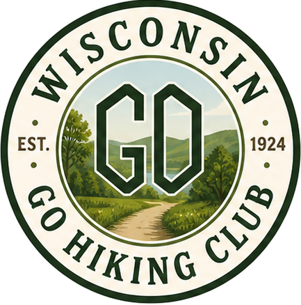

📅 Sat · Jun 6
Devil's Lake — East Bluff
Quartzite scrambles and lake views in the Baraboo Hills.
A volunteer-run community of Wisconsin hikers. Group hikes every week, 2–8 miles, all skill levels. Guests welcome — try a hike before you join.

Weekly group hikes, 2–8 miles, every difficulty from Rambler to Level 4. Multiple hikes most weekends.
We're here for the fellowship as much as the trail. Camping trips and social events run throughout the year.
Search 228 Ice Age & North Country segments, 295 local trail areas, plus state parks — with maps & elevation profiles.
Tracing the edge of the last glacier — St. Croix gorge to Door County.
Browse →Wild Bayfield Peninsula and Chequamegon–Nicolet between MN and MI.
Browse →From the Chequamegon–Nicolet to small county trail networks across the state.
Browse →Browse the schedule. Each hike lists the meeting spot, leader, distance, and difficulty level.
Meet the hike leader at the start. No RSVP needed for guests — just show up.
Any costs (parking, shuttle gas) are split evenly among everyone there. Most hikes are free.
Quartzite scrambles and lake views in the Baraboo Hills.
Waterfalls and gorges along 7 miles of the North Country Trail.
Linear point-to-point. Wildflowers in full bloom this time of year.
A favorite quiet forest loop in the northwoods.